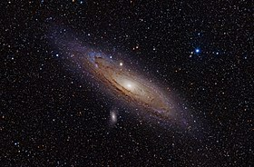

Guia das galáxias

Galáxia de Andrômeda
Descrição
A galáxia de Andrômeda (messier 31, NGC 224) é uma galáxia espiral localizada a cerca de 2,54 milhões de anos-luz de distância da terra, na direção da constelação de Andrômeda
Dados interessantes:
- Além da Via Láctea, é a galáxia mais estudada
- Suas duas galáxias satélites, messier 32 e messier 110, são visíveis em binóculos
- Sua distância em relaçao à terra ainda não foi bem definida